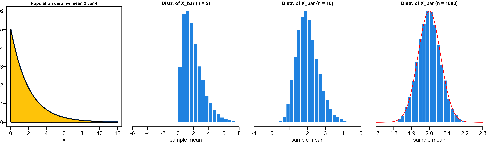

Sampling Distribution and Central Limit Theorem
MATH 4720/MSSC 5720 Introduction to Statistics
Sampling Distribution
- Sampling distribution is an important concept that connect probability and statistics together.
- Til now, we can start talk a little bit about statistical inference.
- After we finish the discussion of probability this week, we are going to formally study statistical inference next week.
- To do statistical inference, we use the sampling distribution a lot, and that’s why we have to learn what it is before doing statistical inference.
Parameter
-
Parameters in a probability distribution are the values describing the entire distribution.
- Binomial: two parameters \(n\) and \(\pi\)
- Poisson: one parameter \(\lambda\)
- Normal: two parameters \(\mu\) and \(\sigma\)
. . .
- In statistics, we usually assume our target population follows some distribution, but its parameters are unknown to us.
. . .
Human weight follows \(N(\mu, \sigma^2)\)
# of snowstorms in one year follows \(Poisson(\lambda)\)

Treat Each Data Point as a Random Variable
\(n\) random variables \(X_1, X_2, \dots, X_n\).
\(X_1, X_2, \dots, X_n\) come from the same distribution.
View \(X_i\) as a data point to be drawn from a population with some distribution, say \(N(\mu, \sigma^2)\).

- Previously when we talk about probability distributions, we usually assume there is a r.v. that follows some distribution, right? For example, \(X\) from binomial, poisson, normal
- Now, let’s assume we have a bunch of r.v.
- \(n\) random variables: \(X_1, X_2, \dots, X_n\).
- Assume \(X_1, X_2, \dots, X_n\) follow the same distribution, e.g., \(X_i \sim N(\mu, \sigma^2), i = 1, \dots, n\) .
Treat Each Data Point as a Random Variable
Assume that \(X_1, X_2, \dots, X_n\) are independent, i.e., the distribution/value of \(X_i\) is not affected by any other \(X_j\).
With the same distribution, \(X_1, X_2, \dots, X_n\) are independent and identically distributed (i.i.d.): \(X_1, X_2, \dots, X_n \stackrel{iid}{\sim} N(\mu, \sigma^2)\)
-
\((X_1, X_2, \dots, X_n)\) is a random sample of size \(n\) from the population.
- \(X_1, X_2, \dots, X_{50}\) are randomly selected SAT scores from the SAT score population that follows \(N(1100, 200^2)\)
. . .
- Before we actually collect the data, the data \(X_1, X_2, \dots, X_n\) are random variables from the population distribution \(N(\mu, \sigma^2)\).
- Once we collect the data, we know the realized value of these random variables, \(x_1, x_2, \dots, x_n\).
- Assume \(X_1, X_2, \dots, X_n\) follow the same distribution.
- Assume that \(X_1, X_2, \dots, X_n\) are independent, i.e., the distribution of \(X_i\) is not affected by any other \(X_j\).
- Now this is where we connect the idea of sample data and population with the random variable and the distribution.
- View \(X_i\) as a data point to be drawn from a population with some distribution, say \(N(\mu, \sigma^2)\).
- We haven’t really sample those points yet. Before we actually collect the data, they are random variables, and we don’t know their value.
- Once we collect the data, we know the realized value of these random variables.
- \((X_1, X_2, \dots, X_n)\) is our random sample data that are sampled or drawn from the population that are assumed normally distributed with mean mu and SD sigma.
When we say \(X\) follows some distribution, it means that
Sampling Distribution
- Any value computed from a sample \((X_1, X_2, \dots, X_n)\) is called a (sample) statistic.
- Sample mean \(\frac{1}{n}\sum_{i=1}^n X_i\) is a statistic.
Can you provide another statistic?
. . .
Sample variance \(\frac{\sum_{i=1}^n \left(X_i - \overline{X}\right)^2}{n-1}\) is a statistic.
. . .
Since \(X_1, X_2, \dots, X_n\) are random variables, any transformation or function of \((X_1, X_2, \dots, X_n)\), or statistic, is also a random variable.
The probability distribution of a statistic is called the sampling distribution of that statistic.
. . .
Does the sample mean \(\overline{X} = \frac{1}{n}\sum_{i=1}^n X_i\) have a sampling distribution?
Sampling Distribution
- It is the probability distribution of that statistic if we were to repeatedly draw samples of the same size from the population.

Sampling Distribution
What are the differences between the sampling distribution of \(\overline{X}\) and the population distribution each individual r.v. \(X_i\) is drawn from?
. . .
Sample means \((\overline{X})\) are less variable than individual observations \(X_i\).
Sample means \((\overline{X})\) are more normal than individual observations \(X_i\).
Example: Sampling Distribution of the Sample Mean
Roll a fair die 3 times 🎲🎲 🎲 independently to obtain 3 values from the population \(\{1, 2, 3, 4, 5, 6\}\).
Repeat the process 10,000 times and plot the histogram of the sampling mean.


Sampling Distribution of Sample Mean
Suppose \((X_1, \dots, X_n)\) is the random sample from a population distribution with mean \(\mu\) and standard deviation \(\sigma\).
The mean of the sampling distribution of the sample mean, \(\overline{X} = \frac{\sum_{i=1}^nX_i}{n}\), is \(\mu_{\overline{X}} = \mu\) .
The standard deviation of the sampling distribution of the sample mean \(\overline{X}\) is \(\sigma_{\overline{X}} = \frac{\sigma}{\sqrt{n}}\) .
If the population distribution is \(N(\mu, \sigma^2)\) , the sampling distribution of \(\overline{X}\) is exactly \(N\left(\mu, \frac{\sigma^2}{n} \right)\) .
\(\sigma\). - Suppose \((X_1, \dots, X_n)\) is the random sample from ach \(X_i\) is sampled from the same population (same \(\mu\) and same \(\sigma\)).
Sampling Distribution of Sample Mean Illustration

Standardization of Sample Mean
For a single random variable \(X \sim N(\mu, \sigma^2)\), \(Z = \frac{X - \mu}{\sigma} \sim N(0, 1)\).
For the sample mean of \(n\) variables, \(\overline{X} \sim N(\mu_{\overline{X}}, \sigma^2_{\overline{X}}) = N(\mu, \frac{\sigma^2}{n})\), and hence
\[Z = \frac{\overline{X} - \mu_{\overline{X}}}{\sigma_{\overline{X}}} = \frac{\overline{X} - \mu}{\sigma/\sqrt{n}} \sim N(0, 1)\]
Example - Psychomotor retardation
Psychomotor retardation scores for a group of patients have a normal distribution with a mean of 930 and a standard deviation of 130.
What is the probability that the mean retardation score of a random sample of 20 patients was between 900 and 960?

. . .
- \(X_1, \dots, X_{20} \stackrel{iid}{\sim} N(930, 130^2)\), then \(\overline{X} = \frac{\sum_{i=1}^{20}X_i}{20} \sim N\left(930, \frac{130^2}{20} \right)\).
. . .
\[\small \begin{align} P(900 < \overline{X} < 960) &= P\left( \frac{900-930}{130/\sqrt{20}} < \frac{\overline{X}-930}{130/\sqrt{20}} < \frac{960-930}{130/\sqrt{20}}\right)=P(-1.03 < Z < 1.03)\\ &=P(Z < 1.03) - P(Z < -1.03) \end{align}\]
. . .
. . .
Central Limit Theorem
Central Limit Theorem
If \(X_i \stackrel{iid}{\sim} N(\mu, \sigma^2)\) , then \(\overline{X} \sim N\left(\mu, \frac{\sigma^2}{n} \right)\).
What if the population distribution is NOT normal?
. . .
The central limit theorem (CLT) gives us the answer!
Why Use Normal? Central Limit Theorem
Central Limit Theorem (CLT):
Suppose \(\overline{X}\) is from a random sample of size \(n\) and from a population distribution having mean \(\mu\) and standard deviation \(\sigma < \infty\).
As \(n\) increases, the sampling distribution of \(\overline{X}\) looks more and more like \(N(\mu, \sigma^2/n)\), regardless of the distribution from which we are sampling!

CLT Illustration: A Right-Skewed Distribution

CLT Illustration: A U-shaped Distribution

Why CLT is Important?
Many well-developed statistical methods are based on normal distribution assumption.
With CLT, we can use those methods even if we are sampling from a non-normal distribution, or we have no idea of the population distribution, provided that the sample size is large.
CLT Example
Suppose that selling prices of houses in Milwaukee are known to have a mean of $382,000 and a standard deviation of $150,000.
In 100 randomly selected sales, what is the probability the average selling price is more than $400,000?

. . .
Since the sample size is fairly large \((n = 100)\), by CLT, the sampling distribution of the average selling price is approximately normal with mean 382,000 and SD \(150,000 / \sqrt{100}\).
\(P(\overline{X} > 400000) = P\left(\frac{\overline{X} - 382000}{150000/\sqrt{100}} > \frac{400000 - 382000}{150000/\sqrt{100}}\right) \approx P(Z > 1.2)\) where \(Z \sim N(0, 1)\).